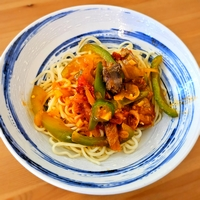

Originaire du Xinjiang, ce plat traditionnel ouïghour est également apprécié dans plusieurs pays d'Asie centrale, tels que le Kazakhstan, le Kirghizistan, l'Ouzbékistan et le Turkménistan.
Son nom vient probablement des nouilles lamian du Nord de la Chine, mais leur préparation diffère légèrement – et heureusement, celle-ci est beaucoup plus simple !
grammes d'
gousses d'
grammes de
cuillère à café de
cuillère à café de
cuillère à café de
cuillère à café de
grammes de
grammes d'
cuillère à café de
cuillères à soupe d'
Il est préférable d'utiliser des morceaux tendres pour cette recette comme le gigot, l'épaule ou le filet.
Vous pouvez également remplacer l'agneau par du bœuf, du poulet, des œufs ou vous en passer.
Mélangez le sel (½ cuillère à café) avec l'eau glacée (100g), puis incorporez progressivement l’eau à la farine en pétrissant environ 1 minute, jusqu'à obtenir une boule rugueuse.
Transférez la pâte sur un plan de travail et pétrissez-la pendant 8 à 10 minutes en formant une longue bûche, en la pliant en deux et en aplatissant la surface. La pâte doit devenir lisse des deux côtés.
Pliez la pâte deux fois dans le sens de la longueur, frappez-la légèrement pour lui donner une forme rectangulaire, puis placez-la dans un bol. Laissez reposer environ 10 minutes.
Étalez la pâte en un rectangle d’environ 10 x 20 cm.
Coupez la pâte en deux en suivant la longueur.
Découpez ensuite des bandes de 1 cm de large.
Huilez (3 cuillères à soupe) généreusement une assiette, déposez-y les bandes de pâte, puis huilez-les également. Recouvrez de film plastique en veillant à ce qu’il adhère aux nouilles pour minimiser l’air.
Laissez reposer de 4 à 8 heures, voire jusqu'à 24 heures, pour détendre le gluten.
Sortez une nouille et, si nécessaire, tamponnez légèrement l'excédent d'huile avec du papier absorbant.
Étirez la nouille entre vos mains jusqu'à ressentir une résistance, puis faites-la rebondir fermement et régulièrement contre le plan de travail.
Répétez l'opération pour toutes vos nouilles.
L'épaisseur idéale doit être légèrement supérieure à celle des spaghetti.
Émincez l'oignon (1), le poivron (1) et le piment (1) en lamelles.
Hachez finement le gingembre (15g), l'ail (6 gousses), les tomates (2) et les tomates séchées (3).
Coupez l'agneau (200g) en fines lamelles.
Dans un wok, faites chauffer l'huile (2 cuillères à soupe) à feu moyen-fort et faites-la tourner pour bien napper le wok et obtenir une surface antiadhésive.
Déposez l’agneau en une seule couche et laissez-le dorer 2 à 3 minutes sans remuer. Retournez les morceaux et laissez cuire encore 1 à 2 minutes.
Retirez la viande et réservez.
Réduisez à feu moyen et ajoutez l’oignon émincé. Faites-le revenir 2 minutes jusqu’à ce qu’il devienne translucide.
Ajoutez le gingembre et l’ail hachés et faites sauter 30 secondes en remuant constamment pour éviter qu’ils ne brûlent.
Ajoutez les tomates séchées et le piment, puis faites cuire 2 minutes en remuant régulièrement.
Ajoutez le sel (1 cuillère à café), le poivre noir (¼ cuillère à café), le poivre blanc (¼ cuillère à café) et le cumin (½ cuillère à café), puis mélangez bien.
Ajoutez le poivron et les tomates fraîches, puis mélangez.
Remettez l’agneau dans le wok. Mélangez bien.
Versez de l’eau jusqu’à couvrir légèrement. Portez à ébullition, puis réduisez à feu doux. Laissez mijoter 10 à 15 minutes, en remuant de temps en temps.
Pendant ce temps, plongez les nouilles dans l'eau bouillante et remuez-les immédiatement pour éviter qu'elles ne collent entre elles. Faites-les cuire pendant 2 à 3 minutes.
Égouttez les nouilles à l’aide d’une passoire, puis rincez-les brièvement à l’eau froide pour stopper la cuisson. Remuez-les bien pour éliminer l’excès d’eau.
Servez-les dans une assiette, ajoutez la garniture et dégustez !
